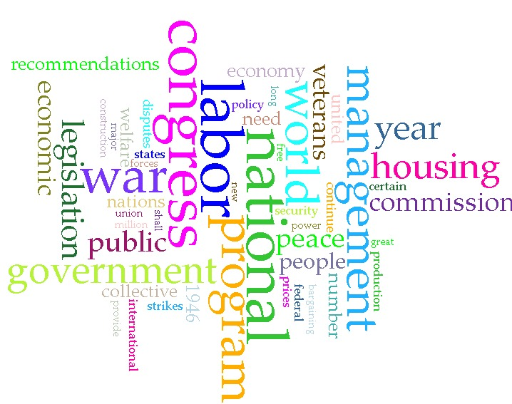
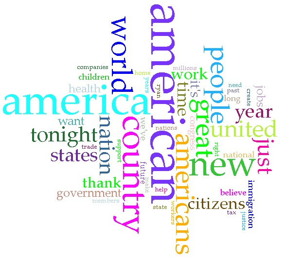
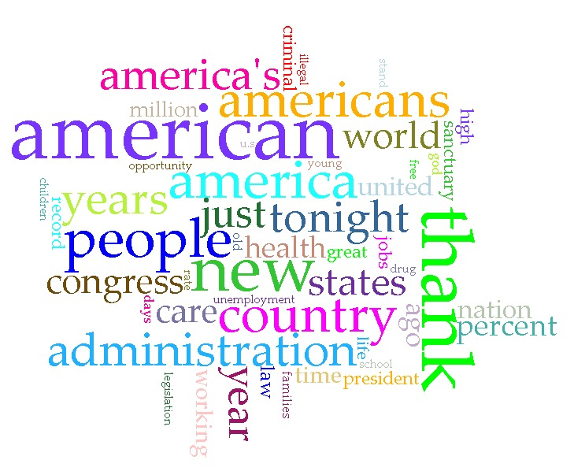

This project compares State of the Union speeches delivered by Harry S. Truman and Donald J. Trump. The goal is to explore how presidential rhetoric, tone, and priorities have changed over time.
Truman’s speeches reflect the post-World War II era, focusing on recovery, democracy, and international cooperation. In contrast, Trump’s speeches emphasize economic growth, national identity, and security.
You can view the XML files used for this project here: GitHub Code View



Truman’s speeches tend to use more formal and collective language, emphasizing unity and global responsibility. His rhetoric reflects the challenges of rebuilding after World War II.
Trump’s speeches are more direct and assertive, often focusing on domestic issues and national strength. His language reflects a more modern and politically divided context.
AntConc analysis of concordance lines shows that Truman frequently uses phrases like "world peace" and "economic recovery," while Trump repeatedly uses phrases like "American people" and "our country," reinforcing a more national focus.
Go back to my main page.